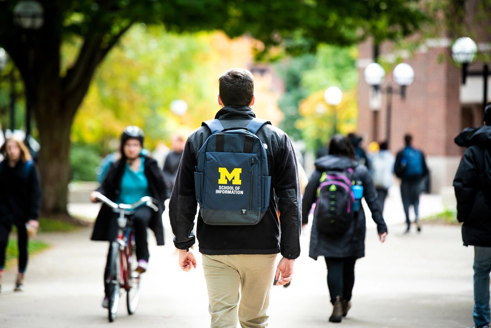

Prepare for the Experience
Learn about the project context, examine assumptions, identify learning goals, and assess team readiness.

The UMSI Engaged Learning Office connects students with opportunities to apply classroom knowledge to real challenges. Use this site to prepare for your experience, begin a strong partnership, and navigate your work.
Real-world projects rarely follow a perfect plan. This site helps you find guidance when you need it, so you can spend less time searching for materials and more time learning, collaborating, and moving your project forward.

Engaged learning projects can change as new needs, constraints, and insights emerge. Start with the stage that best matches your work now.
Learn about the project context, examine assumptions, identify learning goals, and assess team readiness.
Confirm the project scope, establish team roles, agree on communication practices, and begin the partner relationship.
Manage tasks, communicate progress, use feedback, and respond thoughtfully when plans change.
Explore opportunities to collaborate with organizations, communities, student teams, and partners in Michigan and beyond.